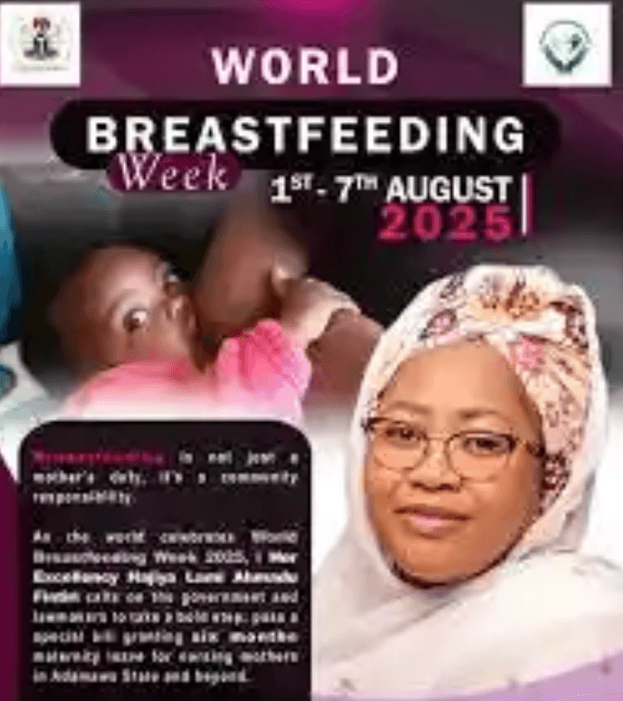

Malal Noodduggu Ko Yola
Jappinnde Toon Mamaaji e Haajere Maayi
Jaŋde Taluude: Jappinnde hello'e nde noodduggu ko e taabal mamaaji haale liggal Yola.
Hallal Taluude
Malal Noodduggu Ko ena seertinaje duuniaa nde hallal kelle-kelle e Yola haa bayan'en njehare noodduggu ko haande liggal e jahde maayi. Taluude ena jaajugol gaccuuje toon walliiɓe, mammaaji, e ndee liggal.

Haaloje Taluude
- Jaŋde Toon: Bayyetaake walliiɓe nde noodduggu ko
- Kaaggu Liggal: Jappinnde daande
- Gaccuuje Taabal: Taabal mammaaji mo'en woɓɗeyɓe
- Bayye Toon Libre: Haa gaccuuje toon walliiɓe
Jaaŋge Walliiɓe
- Jambugguuji noodduggu ko makko-makko
- Halaloji noodduggu ko walliiɓe
- Janngunno'e mammaaji
- Taggal e bayye haa taggal
- Gaccuuje taabal liggal
Jagguje Kaaggutal
- Adamawa State Primary Healthcare Agency
- Gaccuuje toon daande
- Gaccuuje woore mammaaji
- Jagguje toon duuniaa
Jaggo Taluude
- Karfe jappinnde noodduggu ko
- Karfe haaloje toon mammaaji
- Gaccuuje taabal liggal nde karfe
- Jahde maayi nde karfe